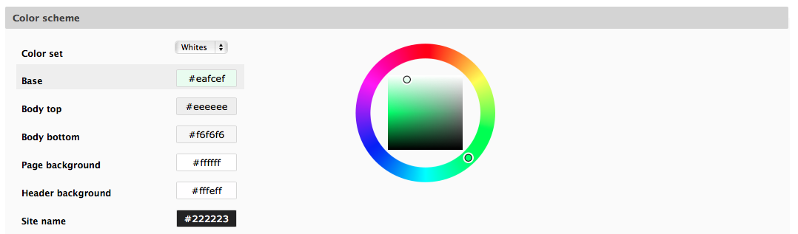
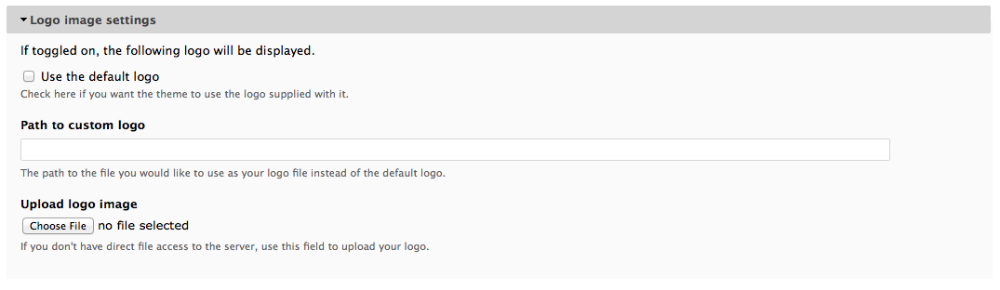
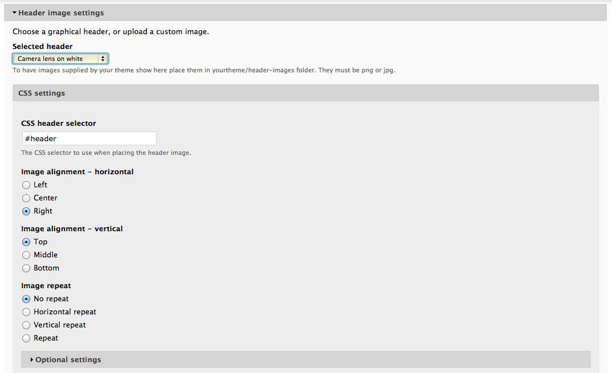
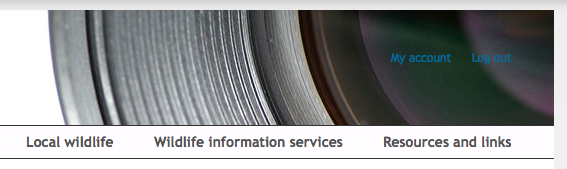

In this tutorial we’re going to take a tour of the configuration options that are available for the indiciatheme Drupal theme provided with the LRC Drupal Template.
Although you can of course use the traditional approach of using stylesheets to change the site colours, indiciatheme supports the Drupal Color module (sic) which allows you to take full control over the colours used on your site without touching code via an easy to use configuration form.
Note
The purists amongst you might be quaking at the thought, since a flexible colour system like this must surely place inline CSS code into every web page? Fortunately this is not the case; when you save the colour configuration the Color Module cleverly rewrites the theme’s CSS files with the updated colour information so there is no need for untidy inline style information. It can even regenerate image files used, swapping one colour gradient for another.
The colour settings for your site can be found by selecting Appearance on the admin menu, then clicking settings for the Indicia default theme. Scroll down the page until you find a section called Color scheme. Let’s change the colour of the background behind the main site menu. Simply click inside the text box for Main menu background then use the colour wheel to the right to change the selected colour. If you know the CSS colour code you can type that in directly instead of using the colour wheel. If using the colour wheel, note that the circle of colours is used to set the hue only, you then need to click in the square in order to set the saturation and brilliance of the colour.
Try changing the Main menu background to red so you can clearly see the effect and then save the configuration page. Now, return to the theme settings page as before and try experimenting with the different colour options available to see the effect on your site.
Tip
If you get in a mess with your site colours, you can reset to the default by choosing Whites in the Color set control at the top of the list of colours.
The header of your site will by default consist of 3 components:
The theme also has built in support for a banner image which can be displayed behind the entire header area.
To change the logo, select Appearance from the admin toolbar, then select Settings for the Indicia default theme. Click on Logo image settings to expand this section then untick the Use the default logo checkbox. This shows a control for specifying a path to a custom logo or uploading a custom logo image:
Click the Choose file button then browse to select an image on your local disk. You might want to first download an image to use, e.g. by visiting your existing site and right clicking on the logo, then selecting Save image as.... Once you have chosen an image file click Save configuration to apply the settings changes, then click the home button in the top left of the admin toolbar to check that the site looks OK.
Changing the header image is done in a similar way, except that the Noggin module is used to facilitate this, and some default background header images are provided. Return to the theme’s settings page and this time expand the Header image settings section right at the bottom of the page. In the Selected header control choose the Camera lens on white image. Finally choose Right as the option for Image alignment - horizontal and save the settings, then check it has worked OK as before.
Another aspect of the site that can be easily changed using the theme’s configuration settings is the page width and behaviour on different devices. Back in the theme’s settings page, you will find the Layout & General Settings section right at the top. There are lots of settings in this section for layouts on different devices.
Tip
Because indiciatheme is based on Adaptive Theme you’ll find lots of useful information on theme configuration in the documentation.
The default behaviour of our site is to use up to a maximum of 1400 pixels width on the page. If the browser is narrower than this, then the page will reduce in width. On your home page, try reducing the width of your browser and see what happens. Let’s change to a fixed width site:
Visit your home page and try gradually reducing the browser width. You will see that the page width is fixed to 1200 pixels and as you reduce the width below that limit, a scroll bar appears to allow the hidden page content to still be accessed. Reduce the width of your browser and all of a sudden the browser’s scroll bar disappears. The page reverts to the maximum width behaviour we had before. This is because the theme configuration has different layout settings for tablet and phones. These are triggered based on the browser width so as you reduce the browser width, you trigger the tablet layout to kick in and we’ve not reconfigured that to a fixed width.
If you want to know more about layout options in Adaptive Theme, there is more information in the documentation. Don’t forget that you can install your own Drupal theme as an alternative - indiciatheme is just provided as a quick way to get started. There are lots of other cool Drupal 7 responsive themes around, mostly free. Here are a few good “boilerplates” you might like to check out.
Reset your site to 100% width and max width 1400 pixels before continuing.
Another feature of the theme settings page is the ability to add your own custom CSS (cascading style sheets) to the site. If CSS is new to you, then there is lots of documentation on the web such as this to get you started - it’s a worthwhile skill. A nice feature of the Adaptive Theme support for custom CSS is that your styles are included rewritten into the theme’s CSS files, which is far cleaner and more efficient than including the custom CSS in the header of every page.
If you visit your home page and have followed the tutorial accurately to this point, you will notice that the font colour used for the user menu is now inappropriate, since it is overlaid onto the dark background of the header image.
This is a good example of a minor style “tweak” that the custom CSS feature is ideal for fixing. If you want a more comprehensive overhaul of your site’s styles, then this is not the way to do it. You should either write your own subtheme, or use an entirely new theme. So, let’s see how to apply minor CSS tweaks to the site:
header#header .menu a { color: #FFFFFF; }